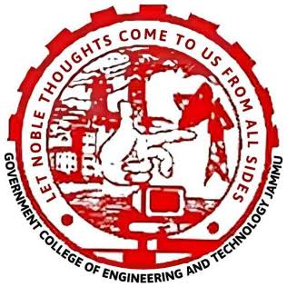

GOVERNMENT COLLEGE OF ENGINEERING & TECHNOLOGY, JAMMU (Autonomous College)
Home
Faculty
Students
photo gallery
Student admission form
Prof. (Dr.) Sameru Sharma
GCET. JAMMU PRINCIPLE
Dr. Bhawna Sharma
Professor
Dr. Jyoti Kumar Mahajan
Professor
Ms. Sheetal Gandotra
Professor